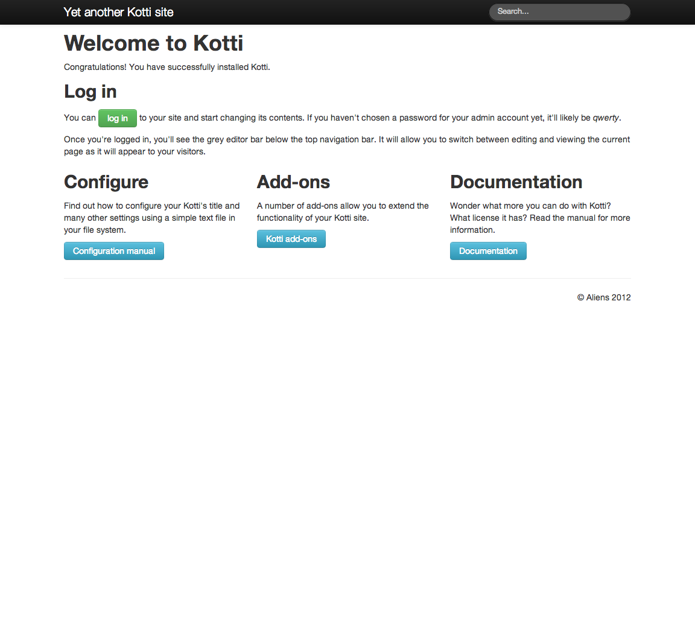

A website is a website is a website. Not.
For the modern day World Wide Web, websites are built using several main development approaches, including:
- Client-side focus (web browser on your computer), using JavaScript, with
the server software kept as a simple storage system.
- Server-side focus, using languages like Java, Python, and others, with a
robust database storage system.
- Combinations that blur these two approaches.
Kotti uses the second approach mainly, but has the flavor of a combined approach, with JavaScript used for parts of the user interface, and with Python forming the heart of the system on the server, backed by a powerful database engine.
As a user, you don’t have to know about the languages used, nor the focus on browser- or server-side programming. You just use the website. However, understanding the nature of the software will help you to appreciate it, to build confidence in it.
The choice of approach made by Kotti, and the software components used, reflect several goals desired by the seasoned content management system professionals and software developers who make Kotti:
- Keep the core simple, using a natural design.
- Use and re-use best-of-breed software components.
- Write code that uses best practices for style and form.
- Work collaboratively, using modern development tools.
- Test the software continuously.
Kotti has marched through numerous revisions to become stable, and a group of dedicated software developers has assembled. The future looks bright for the adoption of Kotti for small and large websites, for internal company systems, for social media, and many other niches. It is a capable CMS.
The design of Kotti has content storage as something like an outline or tree, where content is nested in a meaningful way. This is the natural aspect. The Document content type is the most important part of this concept. Documents are added to a Kotti website in the way word-processor documents are created, but in the context of the web. Documents contain text and may include images, files, and links to other documents. Kotti’s design makes linking documents to one another easy.
A fresh default Kotti website looks simple enough:
There is a simple header area with a Search box. The symbol with the horizontal lines at the right side of the header is a browser settings button that shows up when the screen is tablet-size. There is a Welcome statement, instructions for logging in, configuring the site, viewing a list of available add-ons, and viewing documentation. The amusing footer is a signature of a software system called Pyramid that Kotti uses as a foundation.
All of this will change when initial content is added.